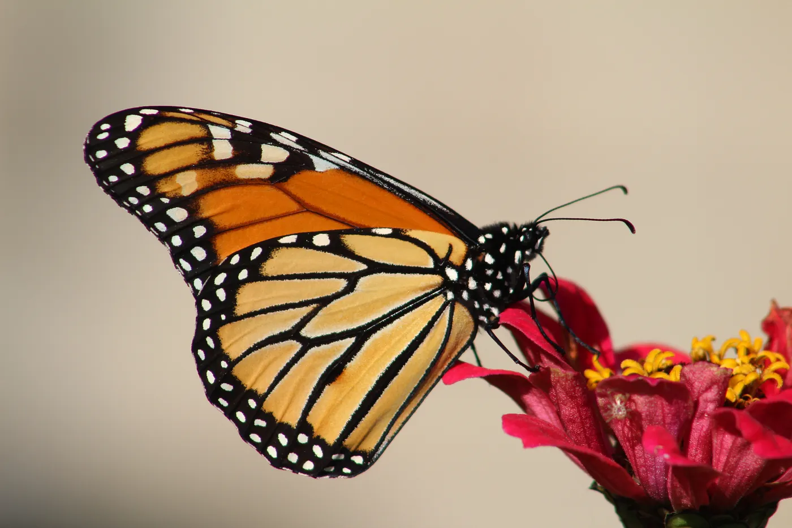
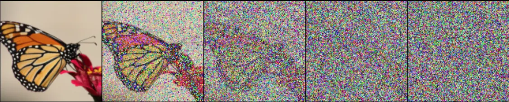

Intro to Diffusion Model — Part 4
In this post, we are going to talk more about the forward process. We define the noise schedule and write some code to implement this process.
This post is part of a series of posts about diffusion models:
- Intro to Diffusion Model — Part 1
- Intro to Diffusion Model — Part 2
- Intro to Diffusion Model — Part 3
- Intro to Diffusion Model — Part 4 (this post)
- Intro to Diffusion Model — Part 5
- Intro to Diffusion Model — Part 6
- Intro to Diffusion Model — Part 7
- Full implementation
In part 2, we defined the forward process. Recall that in this process, we gradually add noise to the original image in a series of time steps. At each time step \(t\), the variance of the noise added to the previous step is predetermined by the variance schedule, and it’s marked as \(\beta_t\), where \(0 < \beta_1 < \dots < \beta_T < 1\).
The variance schedule can be of different types, such as linear, cosine, quadratic, etc. In the paper Denoising Diffusion Probabilistic Models, they used a linear time schedule, meaning \(\beta\) grows linearly from some initial value to some final value (in the paper, they used \(\beta_1 = 10^{-4}\) and \(\beta_T = 0.02\)).
In a later paper, Improved Denoising Diffusion Probabilistic Models, it was shown that using a cosine schedule provides better results than the linear one.
Let’s implement these two schedules.
def linear_schedule(num_timesteps):
beta_start = 1e-4
beta_end = 0.02
betas = torch.linspace(beta_start, beta_end, num_timesteps)
return betas
def cosine_schedule(num_timesteps, s=0.008):
def f(t):
return torch.cos((t / num_timesteps + s) / (1 + s) * 0.5 * torch.pi) ** 2
x = torch.linspace(0, num_timesteps, num_timesteps + 1)
alphas_cumprod = f(x) / f(torch.tensor([0]))
betas = 1 - alphas_cumprod[1:] / alphas_cumprod[:-1]
betas = torch.clip(betas, 0.0001, 0.999)
return betasNow, we want to define a function for sampling from the forward process. First, let’s define a helper function to sample a tensor sorted by time, according to timesteps.
def sample_by_t(tensor_to_sample, timesteps, x_shape):
batch_size = timesteps.shape[0]
sampled_tensor = tensor_to_sample.gather(-1, timesteps.cpu())
sampled_tensor = torch.reshape(sampled_tensor, (batch_size,) + (1,) * (len(x_shape) - 1))
return sampled_tensor.to(timesteps.device)and define \(\alpha_t\), \(\bar{\alpha}_t\), \(\beta_t\) and some operation on them as we need according to the developments in part 2 and part 3.
num_timesteps = 300
betas_t = linear_schedule(num_timesteps)
alphas_t = 1. - betas_t
alphas_bar_t = torch.cumprod(alphas_t, dim=0)
alphas_bar_t_minus_1 = torch.cat((torch.tensor([0]), alphas_bar_t[:-1]))
one_over_sqrt_alphas_t = 1. / torch.sqrt(alphas_t)
sqrt_alphas_bar_t = torch.sqrt(alphas_bar_t)
sqrt_1_minus_alphas_bar_t = torch.sqrt(1. - alphas_bar_t)
# the variance of q(xₜ₋₁ | xₜ, x₀) as in part 3
posterior_variance = (1. - alphas_bar_t_minus_1) / (1. - alphas_bar_t) * betas_tThe forward process sampling function is
def sample_q(x0, t, noise=None):
if noise is None:
noise = torch.randn_like(x0)
sqrt_alphas_bar_t_sampled = sample_by_t(sqrt_alphas_bar_t, t, x0.shape)
sqrt_1_minus_alphas_bar_t_sampled = sample_by_t(sqrt_1_minus_alphas_bar_t, t, x0.shape)
x_t = sqrt_alphas_bar_t_sampled * x0 + sqrt_1_minus_alphas_bar_t_sampled * noise
return x_twhere we use the relation from part 2
\[\mathbf{x}_t = \sqrt{\bar{\alpha}_t}\mathbf{x}_0 + \sqrt{1 - \bar{\alpha}_t}\epsilon\]
Now, it’s time to see how an image will look when adding a different amount of noise during the forward process. For that, let’s start by loading an image to work with. We are going to use PIL and the requests modules to get an image from the web.

import requests
from PIL import Image
url = 'https://images.pexels.com/photos/1557208/pexels-photo-1557208.jpeg?auto=compress&cs=tinysrgb&w=1260&h=750&dpr=2'
image_raw_data = requests.get(url, stream=True).raw
image = Image.open(image_raw_data)
To work with the image, we need to convert it into a Pytorch tensor. We also want to transform it according to some standardization:
- A square shape
- Predefined size
- Values in the range [-1, 1]
We can achieve this with the help of the transforms module from torchvision.
from torchvision.transforms import Compose, ToTensor, CenterCrop, Resize, Normalize
image_size = 128
transform = Compose([
Resize(image_size), # resize smaller edge to image_size
CenterCrop(image_size), # make a square image with size image_size
ToTensor(), # convert to tensor with shape CHW and values in the range [0, 1]
Normalize(mean=(0.5, 0.5, 0.5), std=(0.5, 0.5, 0.5)) # set the values to the range [-1, 1]
])We also want a reverse transformation to return the image into a PIL object and one for getting a tensor with values in the range [0, 1].
from torchvision.transforms import ToPILImage
reverse_transform_pil = Compose([
Normalize(mean=(-1, -1, -1), std=(2, 2, 2)),
ToPILImage()
])
reverse_transform_tensor = Compose([
Normalize(mean=(-1, -1, -1), std=(2, 2, 2)),
])Pay attention that the image is still a square shape and size image_size after the reverse transformation.
We can define a function that, given an image as a tensor and a timestep \(t\), returns a noisy image sampled from the \(q\) distribution.
def get_noisy_image(x0, t, transform=reverse_transform_pil):
x_noisy = sample_q(x0, t)
noise_image = transform(x_noisy.squeeze())
return noise_imageand a function to display noisy images as a grid where the rows are different images, and the columns are the noisy images in different timesteps.
import matplotlib.pyplot as plt
def show_noisy_images(noisy_images):
"""
Show and return a grid of noisy images where
the rows are different images, and the columns
are the noisy images in different timesteps.
Args:
noisy_images (list[list[PIL]]): a list of lists of images
with noise from different timesteps.
"""
num_of_image_sets = len(noisy_images)
num_of_images_in_set = len(noisy_images[0])
image_size = noisy_images[0][0].size[0]
full_image = Image.new('RGB', (image_size * num_of_images_in_set + (num_of_images_in_set - 1), image_size * num_of_image_sets + (num_of_image_sets - 1)))
for set_index, image_set in enumerate(noisy_images):
for image_index, image in enumerate(image_set):
full_image.paste(image, (image_index * image_size + image_index, set_index * image_size + set_index))
plt.imshow(full_image)
plt.axis('off')
return full_imageLet’s see an example.
show_noisy_images([[get_noisy_image(x0, torch.tensor([t])) for t in [0, 50, 100, 150, 200]]])